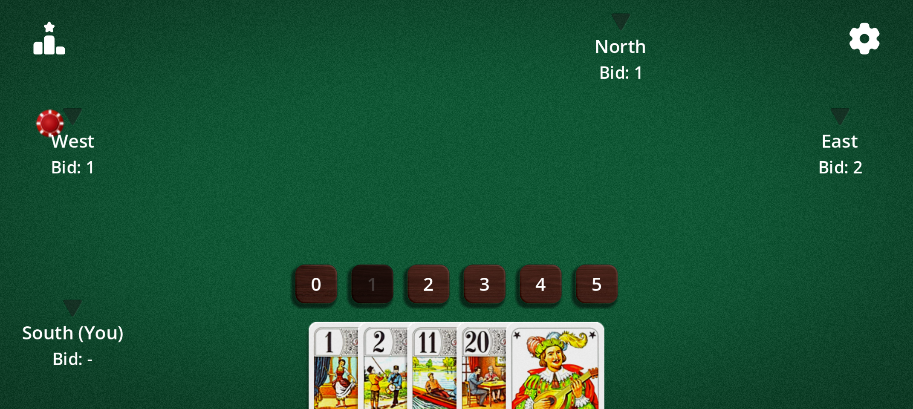
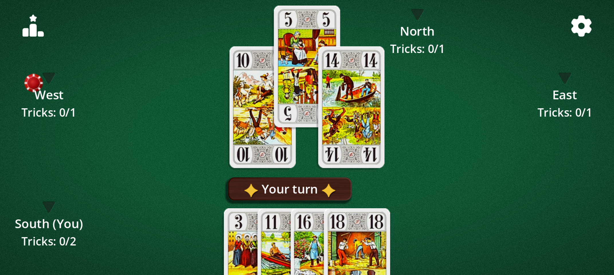
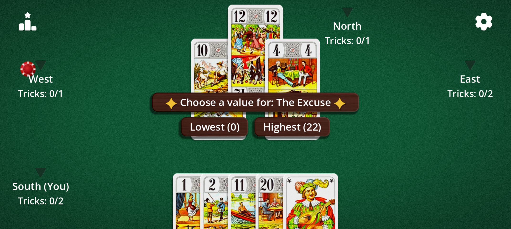
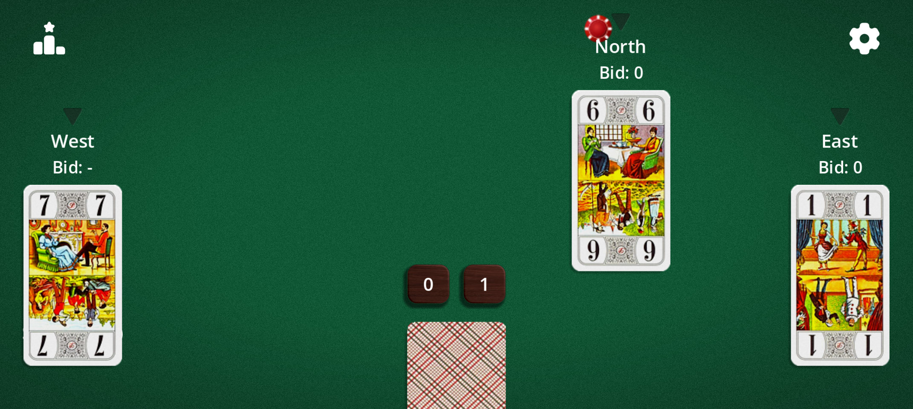

A trick-taking game where you win not by taking the most tricks, but by predicting correctly. 22 cards, 3 to 5 players, fast games.
African Tarot is also known as Whist 22. It is a cousin of Oh Hell, played with the 22 trumps of a tarot deck. The Mexican variant is also called Mexican Tarot.
The cards
African Tarot uses only 22 cards: the 21 trumps, numbered 1 to 21, and the Excuse. There are no suits: only a card's value decides who wins the trick.
Card
Value
Trumps 1 to 21
Their own number (21 is the highest, apart from the Excuse)
The Excuse
0 or 22, chosen by the player who plays it
The 1, the 21 and the Excuse are traditionally the most precious cards: play them at the right moment and watch for them in your opponents' hands.
Objective
Each round, you bid how many tricks you expect to win. Your goal is to win exactly that many. A correct bet keeps you safe; a missed one costs lives, more the bigger the gap.
The game ends when only one player still has lives. You can also set a limited number of deals.
Bidding
Before each round, every player in turn bids a number of tricks from 0 to 5. Passing is not allowed.
By default, the last bidder cannot choose the number that would make all bids add up exactly to the number of tricks, so there is always at least one loser.

Bidding phase: pick from 0 to 5 tricks. The forbidden bid is greyed out.
Gameplay
On your turn, play any card from your hand: you never have to follow suit. The highest card wins the trick.
The number of cards dealt drops each round, like a staircase, down to 1 card per player (5 cards with 4 players, 6 with 3, 4 with 5).

A trick in progress: “Tricks: 0/1” means 0 won out of 1 bid.
The Excuse
When you play the Excuse, you decide on the spot whether it is worth 0 (the lowest) or 22 (higher than the 21).

When playing the Excuse, choose 0 or 22.
Lives and scoring
Each player starts with lives set by the objective: 14 lives for “King to Ace” (the count shows King, Queen, Knight, Jack… down to Ace), or 5, 10, 15, 20, 30 or 50.
The ranking shows the lives remaining after each round. At 0, a player is eliminated.
Variants
Everything can be set in the game's Options:
Variant
Effect
Mexican (Mexican Tarot)
1-card round: yours is hidden, your opponents' cards are visible.
Blind
1-card round: no card is visible, not even yours.
Must overtrump
Play a higher card than the trick's if you can (except the Excuse).
Double 20
If the 20 and the 21 fall in the same trick, the lowest card wins.
Excuse rule
Changing (0 or 22), always zero (always loses) or super 22 (beats the 21).
Excuse before last trick
You must play the Excuse before the last trick.
No Excuse
21-card game.
Forbidden bid
Turns on or off the ban on the last player making the total even.
Objective and deals
King to Ace or 5 to 50 points; unlimited game or 1 to 50 deals.
Direction and first bidder
Clockwise or counter-clockwise; first bidder random, last (easy) or first (hard).

“Mexican” round: you see the others' cards, not your own.